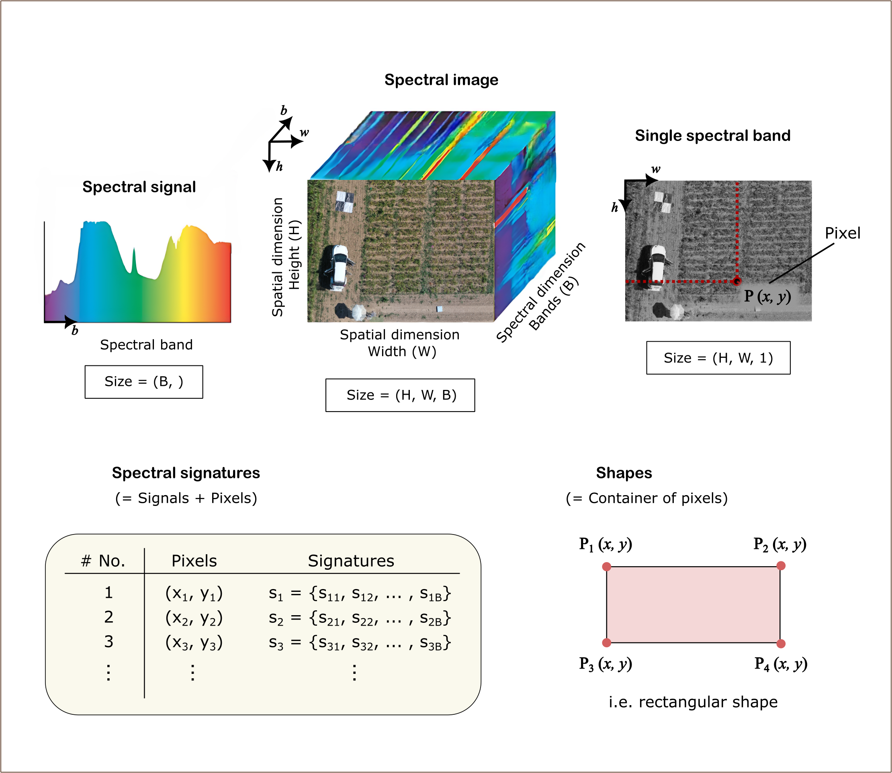

Entities¶
API Documentation
siapy.entities
Entities serve as the foundational data structures in SiaPy, representing key elements of spectral image analysis and processing workflows. They implement consistent, strongly-typed interfaces that allow seamless interaction between spectral data, spatial coordinates, and geometric information.
Module architecture¶
The relationships between components are shown in the following diagram:

Design principles¶
SiaPy's architecture follows several key design principles:
Specialized yet compatible: Each entity is optimized for its specific role while maintaining compatibility with the broader SiaPy ecosystem
Independence: Most entities can function independently (with the exception of abstract base classes)
Composition over inheritance:
- The composition is preferred, so that one class can leverage another by injecting it into its architecture
- Inheritance is primarily used to implement common interfaces through base classes
Extensibility:
- The
SpectralImageclass supports multiple data sources through spectral or rasterio libraries, however, custom data loading can be implemented by creating your own driver - Basic geometric shapes (e.g. points, lines, polygons) are implemented using the shapely library, which could also be extended through base abstraction
Visual representation of spectral entities¶
The components follow standard naming conventions for spectral image analysis. A SpectralImage represents a three-dimensional data cube (height × width × bands). Each pixel in this cube has spatial coordinates (x, y) and a corresponding spectral signal with values across all bands.
A signature combines a pixel's spatial location with its spectral signal, creating a complete spatial-spectral data point. The Signatures class serves as a container for multiple such data points, enabling analysis across collections of pixels.
Since spectral images often contain distinct objects with different spectral properties, Shapes (regions of connected pixels) allow for extraction and analysis of specific areas. The SpectralImage class therefore integrates all primitive structures: Pixels and Signals by definition, and Shapes when attached to the image.

| Name | What it represents | Shape / size |
|---|---|---|
Spectral image |
A single hyperspectral or multispectral data cube. | (H, W, B) → height × width × bands |
Spectral image set |
An ordered collection of SpectralImage objects. Think of it as a “dataset” with convenience methods that loop internally instead of in user code. |
N × SpectralImage for N spectral images |
Pixels |
One Cartesian coordinate (x, y). |
(N, 2) for N pixels |
Shapes |
A geometric region of interest (e.g. rectangle, polygon, circle), serving as a container of pixels. | Vector geometry |
Signatures |
A collection of 1-D spectral signals (B,) tied to pixel values (x, y) or aggregated over a shape. |
(N, B + 2) → N signatures, each with B spectral bands plus (x, y) coordinates |
Pixels¶
API Documentation
The Pixels class represents spatial coordinates within spectral image, providing a container for (x, y) coordinate pairs. It uses pandas DataFrame internally for storage, enabling high-performance operations. The class provides multiple initialization methods and conversion functions to work with different data representations (i.e. DataFrames, list, arrays)
import numpy as np
import pandas as pd
from siapy.entities import Pixels
# Create from pandas DataFrame
pixels1 = Pixels(pd.DataFrame({"x": [10, 20, 30], "y": [40, 50, 60]}))
# Create from numpy array
pixels2 = Pixels.from_iterable(np.array([[10, 40], [20, 50], [30, 60]]))
# Create from list of coordinates
pixels3 = Pixels.from_iterable([(10, 40), (20, 50), (30, 60)])
# Should be the same
assert pixels1 == pixels2 == pixels3
Signals¶
API Documentation
The Signals class stores spectral data for each pixel in a pandas DataFrame, allowing you to use any column names you choose (e.g. "band_1", "nir", "red_edge"). You can initialize it from a DataFrame, lists, dicts or NumPy arrays.
from siapy.entities.signatures import Signals
# Create from iterable (e.g. list, array)
signals = Signals.from_iterable([[0.1, 0.2, 0.3], [0.4, 0.5, 0.6]])
However, direct initialization of Signals is typically not necessary in practice. When you create a Signatures instance, the underlying Signals object is automatically generated and managed for you. This section demonstrates the Signals class primarily to illustrate how the Signatures class (discussed next) is composed internally and to provide insight into the data structure that powers spectral analysis.
Signatures¶
API Documentation
The Signatures class represents spectral data collections by combining spatial coordinates (Pixels) with their corresponding spectral values (Signals). It provides a unified container that maintains the spatial-spectral relationship, allowing for analysis of spectral information at specific image locations. Internally, the data is stored as pandas DataFrames for efficient operations and indexing.
Signatures can be initialized in multiple ways. The explicit approach creates each component separately before combining them, providing clarity about the composition:
import pandas as pd
from rich import print
from siapy.entities import Pixels, Signatures
from siapy.entities.signatures import Signals
# Option 1: Step-by-step initialization
# Initialize Pixels object from a DataFrame
pixels_df = pd.DataFrame({"x": [10, 30], "y": [20, 40]})
pixels = Pixels(pixels_df)
# Initialize Signals object from a DataFrame
signals_df = pd.DataFrame([[1, 2, 3], [4, 5, 6]])
signals = Signals(signals_df)
# Create Signatures object from Pixels and Signals objects
signatures1 = Signatures(pixels, signals)
For more concise code, you can initialize a Signatures object directly from coordinate and signal values:
# Option 2: Direct initialization with raw data
# Initialize Signatures directly from raw signals and coordinates data
signatures2 = Signatures.from_signals_and_pixels(
signals=[[1, 2, 3], [4, 5, 6]],
pixels=[[10, 20], [30, 40]],
)
Both approaches yield equivalent results when initialized with the same data. You can access and work with the data using various DataFrame operations and conversion methods:
# Verify that both approaches produce equivalent results
assert signatures1 == signatures2
# Print the DataFrame representation of Pixels and Signals
df_multi = signatures2.to_dataframe_multiindex()
print(f"MultiIndex DataFrame:\n{df_multi}")
print(f"Signals DataFrame:\n{signatures2.signals.df}")
print(f"Pixels DataFrame:\n{signatures2.pixels.df}")
Shape¶
API Documentation
The Shape class represents geometric shapes that can be associated with images, such as points, lines, and polygons.
from siapy.entities import Pixels, Shape
# Create a point
point = Shape.from_point(10, 20)
# Create a polygon from pixels
pixels = Pixels.from_iterable([(0, 0), (10, 0), (10, 10), (0, 10)])
polygon = Shape.from_polygon(pixels)
# Load from shapefile
shape = Shape.open_shapefile("path/to/shapefile.shp")
Spectral Image¶
API Documentation
A SpectralImage is the primary container for spectral image data. It's a generic class that can wrap different image backends, allowing you to work with various file formats through a unified interface.
Image Initialization Options¶
1. Load from ENVI format (using spectral python)¶
This is commonly used for hyperspectral imagery from airborne or satellite sensors.
from siapy.entities import SpectralImage
from siapy.entities.images import SpectralLibImage
# Load from ENVI format (uses spectral python library)
image_sp = SpectralLibImage.open(
header_path="path/to/header.hdr",
image_path="path/to/image.img",
)
image = SpectralImage(image_sp)
# Or you can use the class method to load the image directly
image = SpectralImage.spy_open(
header_path="path/to/header.hdr",
image_path="path/to/image.img",
)
2. Load from GeoTIFF or other geospatial formats (using rasterio)¶
Perfect for georeferenced data with spatial information.
from siapy.entities import SpectralImage
from siapy.entities.images import RasterioLibImage
# Load from GeoTIFF or other raster formats (uses rioxarray/rasterio python library)
image_rio = RasterioLibImage.open(
filepath="path/to/image.tif",
)
image = SpectralImage(image_rio)
# Or you can use the class method to load the image directly
image = SpectralImage.rasterio_open(filepath="path/to/image.tif")
3. Create from numpy array¶
Useful for testing or when you already have image data in memory.
import numpy as np
from siapy.entities import SpectralImage
# Create a SpectralImage from a numpy array - mostly for testing
array = np.zeros((100, 100, 10)) # height, width, bands
image = SpectralImage.from_numpy(array)
4. Create your own custom image class¶
For specialized file formats or custom processing needs, you can extend the ImageBase class.
from pathlib import Path
from typing import TYPE_CHECKING, Any, cast
import numpy as np
import xarray as xr
from numpy.typing import NDArray
from PIL import Image
from siapy.core import logger
from siapy.core.exceptions import InvalidFilepathError
from siapy.entities import SpectralImage
from siapy.entities.images import ImageBase
if TYPE_CHECKING:
from siapy.core.types import XarrayType
class MyImage(ImageBase):
"""
# Create your own image class by extending ImageBase
# This example demonstrates how to implement a custom image loader
"""
def __init__(self, data: NDArray[np.floating[Any]], file_path: Path) -> None:
self._data = data
self._filepath = file_path
# Define metadata with required fields:
# - camera_id: unique identifier for the imaging device
# - wavelengths: list of spectral band centers in nanometers
# - default_bands: which bands to use for RGB visualization
self._meta: dict[str, Any] = {
"camera_id": "my_camera",
"wavelengths": [450.0, 550.0, 650.0], # RGB wavelengths in nm
"default_bands": [0, 1, 2], # Band indices for RGB display
}
@classmethod
def open(cls, filepath: str) -> "MyImage":
"""Load an image from a file path"""
path = Path(filepath)
if not path.exists():
raise InvalidFilepathError(f"File not found: {filepath}")
try:
# This is a simplified example - in a real implementation,
# you would read the actual image data using an appropriate library
# For example purposes, creating a small random array
data = np.random.random((100, 100, 3)).astype(np.float32)
return cls(data, path)
except Exception as e:
raise InvalidFilepathError(f"Failed to open {filepath}: {str(e)}")
# Required properties (all must be implemented)
@property
def filepath(self) -> Path:
"""Path to the source file"""
return self._filepath
@property
def metadata(self) -> dict[str, Any]:
"""Image metadata dictionary"""
return self._meta
@property
def shape(self) -> tuple[int, int, int]:
"""Image dimensions as (height, width, bands)"""
return cast(tuple[int, int, int], self._data.shape)
@property
def bands(self) -> int:
"""Number of spectral bands"""
return self.shape[2]
@property
def default_bands(self) -> list[int]:
"""Indices of bands to use for RGB visualization"""
return self._meta["default_bands"]
@property
def wavelengths(self) -> list[float]:
"""Center wavelengths of each band in nanometers"""
return self._meta["wavelengths"]
@property
def camera_id(self) -> str:
"""Unique identifier for the imaging device"""
return self._meta["camera_id"]
# Required methods (all must be implemented)
def to_display(self, equalize: bool = True) -> Image.Image:
"""Convert to PIL Image for display"""
# Extract the default bands for RGB visualization
rgb_data = self._data[:, :, self.default_bands].copy()
if equalize:
# Apply linear contrast stretching to each band
for i in range(rgb_data.shape[2]):
band = rgb_data[:, :, i]
min_val = np.min(band)
max_val = np.max(band)
if max_val > min_val:
rgb_data[:, :, i] = (band - min_val) / (max_val - min_val)
# Convert to 8-bit for PIL
rgb_uint8 = (rgb_data * 255).astype(np.uint8)
return Image.fromarray(rgb_uint8)
def to_numpy(self, nan_value: float | None = None) -> NDArray[np.floating[Any]]:
"""Convert to numpy array"""
result = self._data.copy()
if nan_value is not None:
result[np.isnan(result)] = nan_value
return result
def to_xarray(self) -> "XarrayType":
"""Convert to xarray DataArray with coordinates"""
return xr.DataArray(
self._data,
dims=["y", "x", "band"],
coords={
"y": np.arange(self.shape[0]),
"x": np.arange(self.shape[1]),
"band": self.wavelengths,
},
attrs=self.metadata,
)
# Example: Using your custom image class with SiaPy
# 1. Create an instance of your custom image class
custom_image = MyImage.open("path/to/your/image.dat")
# 2. Wrap it in a SpectralImage for use with SiaPy's analysis tools
spectral_image = SpectralImage(custom_image)
# 3. Now you can use all SiaPy functionality
# spectral_image.to_signatures(pixels)
# etc.
Data conversion methods¶
The example below demonstrates two key conversion methods of SpectralImage instance:
to_signatures(): Extracts spectral data from specific pixel coordinates and returns aSignaturesobject that maintains the spatial-spectral relationshipto_subarray(): Converts selected pixel data to a NumPy array for numerical processing or integration with other scientific libraries
import numpy as np
from rich import print
from siapy.entities import Pixels, SpectralImage
# Create mock image
rng = np.random.default_rng(seed=42)
array = rng.random((100, 100, 10)) # height, width, bands
image = SpectralImage.from_numpy(array)
# Define pixels
iterable = [(1, 2), (3, 4), (2, 4)]
pixels = Pixels.from_iterable(iterable)
# Get signatures
signatures = image.to_signatures(pixels)
print(f"Signatures:\n{signatures}")
# Get numpy array
subarray = image.to_subarray(pixels)
print(f"Subarray:\n{subarray}")
"""
? Note:
The extracted block has shape (3, 3, 10): a 3 × 3 pixel window across 10 spectral bands.
Values are populated only at the requested pixel coordinates; all other elements are set to NaN.
"""
Spectral Image Set¶
API Documentation
The SpectralImageSet class manages a collection of spectral images.
from pathlib import Path
from siapy.entities import SpectralImageSet
# Load multiple images
header_paths = list(Path("data_dir").glob("*.hdr"))
image_paths = list(Path("data_dir").glob("*.img"))
image_set = SpectralImageSet.spy_open(header_paths=header_paths, image_paths=image_paths)
# Iterate over the images
for image in image_set:
print(image)